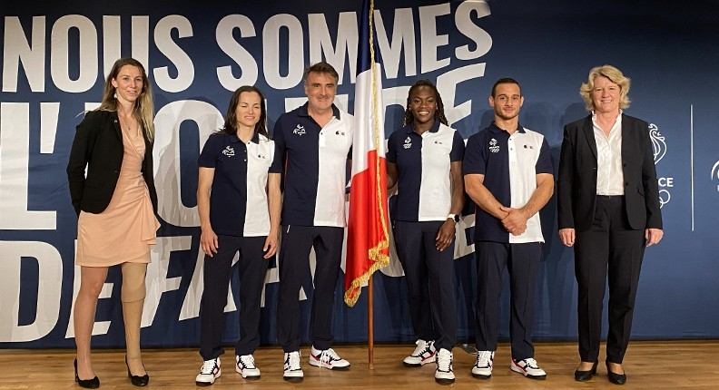
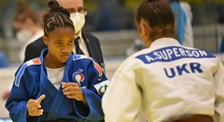

CLARISSE AGBEGNENOU ET SANDRINE MARTINET PORTE-DRAPEAUX DE L'EQUIPE DE FRANCE OLYMPIQUE ET PARALYMPIQUE À TOKYO 2020
La Fédération Française de Judo félicite ses deux championnes Clarisse AGBEGNENOU et Sandrine MARTINET pour leur élection en tant que porte-drapeaux de l’Equipe de France Olympique et Paralympique pour Tokyo 2020. Première historique, deux femmes judokas mèneront l'Equipe de France au Japon cet été.
e judo français sera ainsi mis davantage à l'honneur à Tokyo grâce à sa quintuple championne du monde Clarisse AGBEGNENOU, qui participera à ses deuxièmes Jeux Olympiques, et Sandrine MARTINET, championne paralympique en 2016 en -52kg qui viendra à Tokyo pour remporter le titre en -48kg.
L'ÉQUIPE DE FRANCE CADETTE TERMINE À LA 1ÈRE PLACE LORS DE L'EUROPEAN CUP DE TEPLICE
CES 3 ET 4 JUILLET SE DÉROULAIT L'EUROPEAN CUP DE TEPLICE (RÉPUBLIQUE TCHÈQUE) POUR LES CADETS. L'ÉQUIPE DE FRANCE SE CLASSE PREMIÈRE.
Ce week-end, 32 judokas (16 garçons et 16 filles) représentaient la France lors de la Cadet European Cup de Teplice (République Tchèque). Avec 10 médailles au compteur (3 or - 2 argent - 5 bronze), l’équipe de France termine à la première place au classement des médailles.